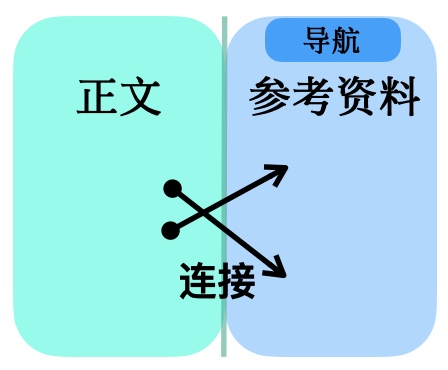

🤖🔍BotBotGo 项目报告 小型类DeepResearch系统
一些生成的研究报告
研究报告结构
报告左侧是正文, 右侧是参考资料.

更多信息
- 这个项目是我在2024年12月的时候一个人做的, 一共花了16天. 我本来因为好奇打算试试一个机器人辩论赛, 所以做了查询维基百科的机器人Wikibot, 以及可以上网的Webbot, 本来它们的任务是为辩手提供论据,
后面干脆直接基于它们做了一个研究式搜索引擎
- 这个项目调用OpenAI/OpenRouter接口开发, 没有微调模型, 也没有用LangChain/CrewAI等框架. 我希望之后如果有机会的话用强化微调等技术做类似的项目
- 上网/本地查找/维基查找的Agent都基于gpt-4o-mini; 报告生成工作流基于gemini-flash
- 单任务成本约 $0.2